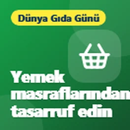
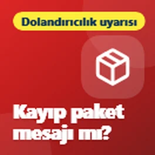
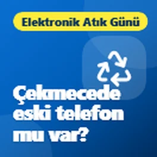
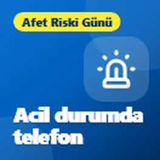
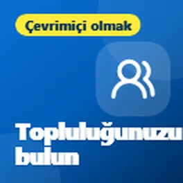
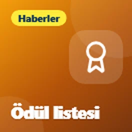
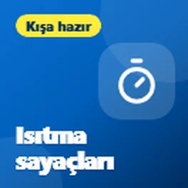
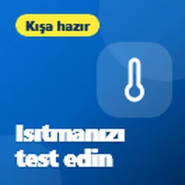

Bu sayfa otomatik olarak çevrildi. Bir şey doğru görünmüyorsa lütfen bana bildirin.
Bridlington ve Doğu Bölgesi için ücretsiz teknoloji ipuçları
Telefonlar, bilgisayarlar ve çevrimiçi güvende kalma konusunda basit İngilizce yardım. Ücretsiz, kaydolmanız gereken hiçbir şey yok.
En son ipuçları

Dinleyebileceğiniz ücretsiz kitaplar ve TV
Ulusal Braille Haftası'nın dördüncü günü, bugünün ipuçları kitaplar, radyo ve dinleyerek keyif alabileceğiniz TV hakkında.
İnternet ve telefon faturalarınızı kesmek için ücretsiz araçlar
Bugün Yoksulluğun Ortadan Kaldırılması Uluslararası Günü, bu yüzden internet maliyetlerinizi düşürmenize yardımcı olabilecek bazı ücretsiz araçları paylaşmak istedim...

Dispraksi: hareket etmek için teknoloji
Dispraksi Farkındalık Haftası'nın altıncı günü, bugün hareket etmek için yardımcı olacak bazı teknolojileri paylaşmak istedim.

Telefonunuzun size okumasını sağlayın
Ulusal Braille Haftası'nın üçüncü günü, bugün telefonunuzun veya bilgisayarınızın sizin için sesli okuma yapmasını sağlamanın ücretsiz yollarını paylaşmak istedim.

Dispraksi: hareket etmek için uygulamalar
Dispraksi Farkındalık Haftası'nın beşinci günü, bugünün ipuçları tamamen hareket etmekle ilgili.

Telefonunuzla yemek masraflarından tasarruf edin
Bugün Dünya Gıda Günü, bu yüzden yiyeceklerde para tasarrufunuza yardımcı olabilecek ve iyi yiyeceklerin boşa gitmesini durdurmanıza yardımcı olabilecek bazı ücretsiz uygulamaları paylaşmak istedim.

Hayat kurtarabilecek ücretsiz uygulamalar
Bugün Kalp Yeniden Başlatma Günü, bu yüzden size CPR öğrenmenize ve birinin kalbi durursa yardım etmeye hazır olmanıza yardımcı olabilecek bazı ücretsiz uygulamaları ve web sitelerini paylaşmak istedim.

Görme kaybıyla hareket etmek
Ulusal Braille Haftasının ikinci günü ve bugün aynı zamanda Beyaz Baston Güvenlik Günü, bu yüzden görme engellilere yardımcı olan bazı ücretsiz uygulamaları paylaşmak istedim...

Dispraksi: okumayı kolaylaştıran araçlar
Dispraksi Farkındalık Haftasının dördüncü günü ve bugün okumayı kolaylaştıran bazı ücretsiz araçları paylaşmak istedim.

Kaybolan bir paketin hakkında bir mesaj mı aldınız?
Sahte paket teslimat mesajları hakkında bir uyarı yapmak istedim, çünkü bunlar şu anda en yaygın dolandırıcılıklardan biri.

Dispraksi: el yazısı zor olduğunda
Dispraksi Farkındalık Haftasının üçüncü günü ve bugünün ipuçları el yazısının zor olduğunu bulan herkes için.

Telefonunuzu okumakta zorlanıyor musunuz?
Bu hafta Ulusal Braille Haftası, bu yüzden görme yetiniz beklediğiniz gibi değilse büyük fark yaratabilecek telefonunuzdaki bazı ücretsiz özellikleri paylaşmak istedim...

Çekmecede eski bir telefon veya dizüstü bilgisayarınız var mı?
Bugün Uluslararası E-Atık Günü, bu da çekmecelerde duran tüm eski telefonlar, tabletler ve dizüstü bilgisayarlar hakkında iyi bir hatırlatıcı. Çoğumuzun...

Dispraksi: düzenli kalmak için araçlar
Dispraksi Farkındalık Haftasının ikinci günü ve bugün düzenli kalmaya yardımcı olan bazı ücretsiz araçları paylaşmak istedim.

Telefonunuz bir acil durumda size yardımcı olabilir
Bugün Uluslararası Afet Riski Azaltma Günü, bu yüzden bir acil durumda size gerçekten yardımcı olabilecek telefonunuzdaki birkaç özelliği paylaşmak istedim....

Elleriniz mi ağrıyor? Telefonunuzun ve dizüstü bilgisayarınızın işi yapmasına izin verin
Bugün Dünya Romatizma Günü, bu yüzden eğer ağrılı, sert veya... hissediyorsanız hayatı çok kolaylaştırabilecek telefonunuz ve dizüstü bilgisayarınızdaki bazı özellikleri paylaşmak istedim.

Çocukların öğrenmesine yardımcı olan teknoloji, ona yüklenmek için değil
Bu hafta Dispraksi Farkındalık Haftası, bu yüzden teknolojinin dispraksili çocuklara nasıl yardımcı olabileceğini paylaşmak istedim. Fikir, onlara yardımcı olmak için teknolojiyi kullanmak...

Telefonunuzu sağlığınız için çalıştırın
Dünya Ruh Sağlığı Günü 10 Ekim'deydi, bu yüzden telefonunuzun zaten biraz daha sakin ve daha... hissetmenize yardımcı olabileceği birkaç basit şeyi paylaşmak istedim.

Sevdiğiniz her şey için bir topluluk var
Çok fazla insanın var olduğunu fark etmediği bir şeyi paylaşmak istedim.

Aniden çıkan reklamlar mı var?
Korkunç pop-up reklamlar hakkındaki gönderimimden sonra, bir uygulamayı kullanmasanız bile Android telefonunuzda reklamlar görünmeye devam ederse ne yapmanız gerektiği aşağıdadır.

Telefonunuzda korkunç bir pop-up mu var? Bu sadece bir reklam.
Telefonlarda bazen görünen o korkunç pop-up'lar hakkında bir ipucu paylaşmak istedim.
Navigasyon cihazınız güncel mi?
Arabanızda hala navigasyon cihazı kullananlar için hızlı bir ipucu.

Time2Volunteer Ödülleri 2026 için seçildi
Biraz haber paylaşmak istedim. Yerel bir teknik destekle yaptığım gönüllülük çalışmaları için Time2Volunteer Ödülleri 2026'da aday gösterildim...

Bilgisayarınızı güvende tutmak için basit gerçekler
Bilgisayarınızı güvende tutmaya dair birkaç ipucu paylaşmak istedim, çünkü birçok kişi aslında ihtiyaç duymadığı antivirüsler için para ödemeye başlıyor.
QR kod nedir?
QR kodları hakkında hızlı bir ipucu paylaşmak istedim.

Isıtma ve sıcak su zamanlayıcılarınızı kontrol edin
Hava soğumaya yaklaştıkça, ısıtma ve sıcak su zamanlayıcılarınızı kontrol etmenin iyi bir zamanı.

Kış öncesi ısıtmanızı test edin
Kış yaklaştıkça, özellikle bu yıl çok kullanılmadıysa ısıtmanızı test etmek için şimdi iyi bir zamandır.
Konu başlıklarına göre ipuçlarını gezinin
- Dolandırıcılıklar ve güvende kalma (4)
- Sağlık ve esenlik (13)
- Para (2)
- Çevrimiçi olmak ve bağlantıda kalmak (2)
- Haberler (1)
- Günlük teknoloji (5)
İnsanların söyledikleri
Çok teşekkür ederim efendim
Evet, kesinlikle faydalı, teşekkürler. İpuçlarınızın işine yarayacağını düşündüğüm herkesle paylaşacağım 😃
Faydalı, teşekkürler
Hakkımda ve bu ipuçları hakkında daha fazla bilgi
Yeni ipuçlarını e-postayla alın
Yeni bir ipucu paylaştığımda kısa bir e-posta. Ücretsiz ve istediğiniz zaman bırakabilirsiniz.
Onay için bir e-posta alacaksınız. E-postalar follow.it tarafından gönderilir ve her birinde abonelikten çıkma bağlantısı vardır.